Python Basics
Introduction to Python & Programming together for the absolute beginner! But, Solo-Leveling is better, and Consistency is a key in here. Good luck!
Welcome to Python Basics!
In this lesson, we will begin by understanding what programming is, how computers follow instructions, what programming languages are, and why Python is a good language for beginners. You do not need any previous programming experience to study this lesson. We will start with simple ideas and familiar examples before moving on to writing our first lines of code.
Remember that learning programming is not about memorizing every command. It is about understanding problems, thinking logically, creating instructions, and learning how to solve problems step by step.
1.What Is Programming?
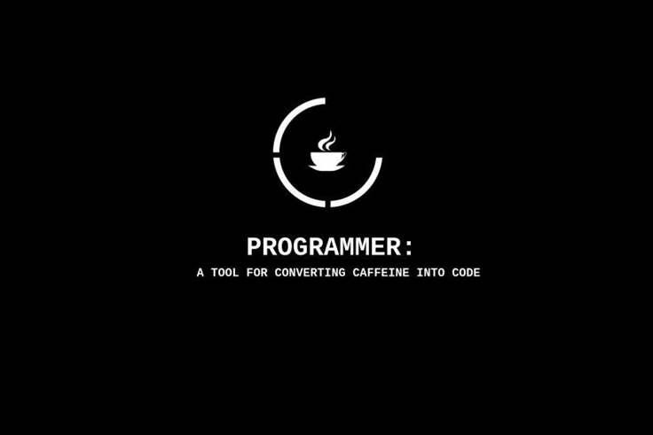
Programming is the process of writing instructions that tell a computer what to do. Computers can perform many tasks, such as displaying information, calculating numbers, storing data, and running applications. However, they need instructions to know which tasks to perform and how to perform them. A programmer writes these instructions using a programming language that a computer can process.
To understand this idea, imagine that you want to make a cup of tea. You need to follow a series of steps: prepare the cup, boil the water, put the tea into the cup, pour in the hot water, and wait for the tea to be ready. If you skip an important step or do things in the wrong order, you might not get the result you expect. Programming works in a similar way. We break a task into smaller steps and give the computer instructions to complete them.
For example, imagine that you want a computer to display a welcome message to a student. You need to write an instruction telling the computer which message to display. The computer follows that instruction and produces the expected result. This is a simple example of programming, even though the task itself is not complicated.
Programming is useful because it allows us to turn our ideas into something a computer can do. We can write programs to solve mathematical problems, organize information, create games, build websites, and automate repetitive tasks. The important idea to remember is that programming means giving a computer instructions to accomplish a task or solve a problem.
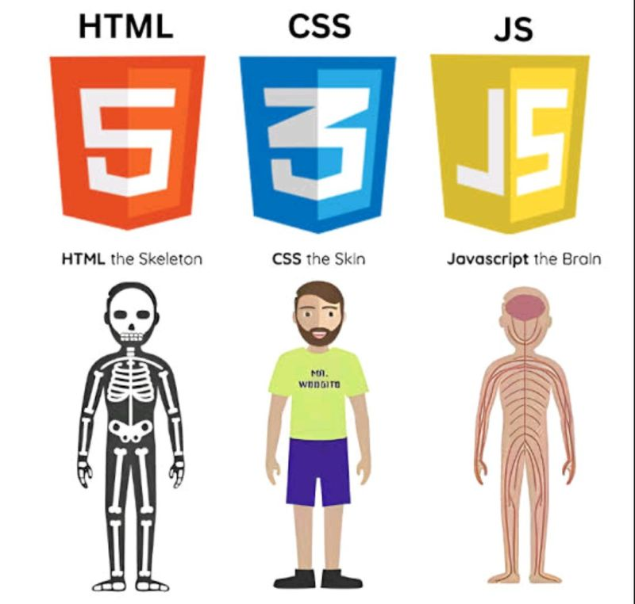
2.How Does Programming Work?
A computer program generally follows a simple process: a programmer writes instructions, the computer processes those instructions, and the computer produces a result. We can understand this process by thinking about an ordinary calculator. When you enter two numbers and press the addition button, the calculator processes your input and displays the answer. A program can perform a similar calculation by following instructions written by a programmer.
In programming, we can describe this process using three basic ideas: input, process, and output.
-
Input
Input is the information or data given to a program. For example, a user might enter two numbers into a program.
-
Process
Process is the work the program performs using that information. For example, the program adds the two numbers together.
-
Output
Output is the result produced by the program. For example, the program displays the sum of the two numbers on the screen.
Imagine that you want to calculate the total price of two notebooks. You enter the prices of the notebooks as input, the program adds the prices together as the process, and the total price appears as the output. This is a simple example of how programming can help people complete everyday tasks.
Not every program needs a user to enter information. Some programs follow instructions automatically, while others receive information from files, sensors, websites, or other computer systems. However, input, process, and output are useful basic concepts for understanding how many programs work.
It is also important to remember that computers follow the instructions provided to them. If a programmer writes an incorrect instruction or forgets an important step, the program might produce an unexpected result. Programmers therefore need to test their programs, identify mistakes, and correct them. Finding and fixing mistakes in code is called debugging, which you will learn more about as you continue studying programming.
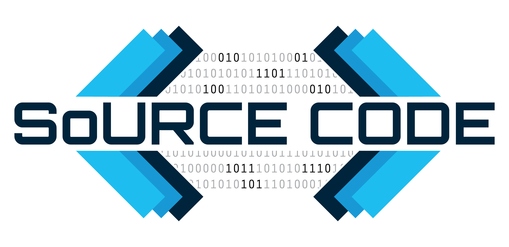
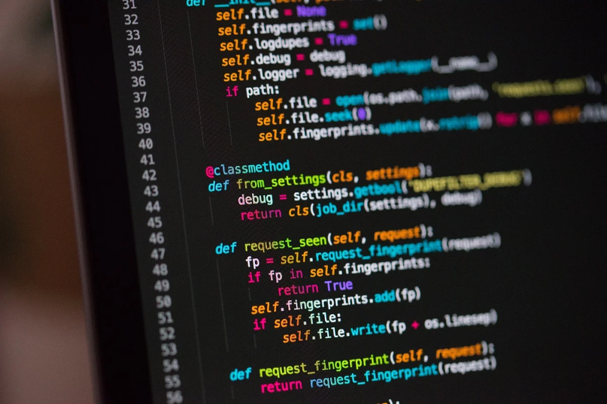
3.What Is a Programming Language?
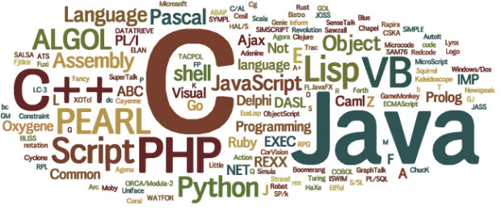
A programming language is a language used to write instructions for a computer. People use programming languages to express what they want a computer to do in a structured way. Each programming language has its own rules, symbols, and ways of writing instructions. These rules are important because the computer needs to process the instructions according to the language's requirements.
Think about human languages. People use Burmese, Thai, English, and many other languages to communicate with one another. Although these languages can express similar ideas, they use different words and grammar rules. Programming languages are similar in the sense that they provide different ways to write instructions, but they are designed for communicating instructions to computers rather than for ordinary human conversation.
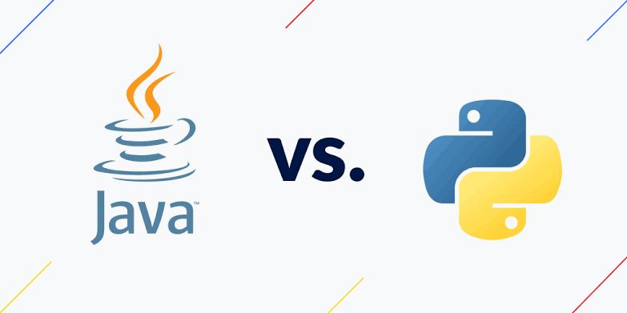
There are many programming languages, including Python, JavaScript, Java, and C++. Programmers choose a language based on the task they want to complete, the requirements of their project, and other practical considerations. For example, JavaScript is widely used to make websites interactive, while Python is commonly used for general-purpose programming, data analysis, and many other tasks.
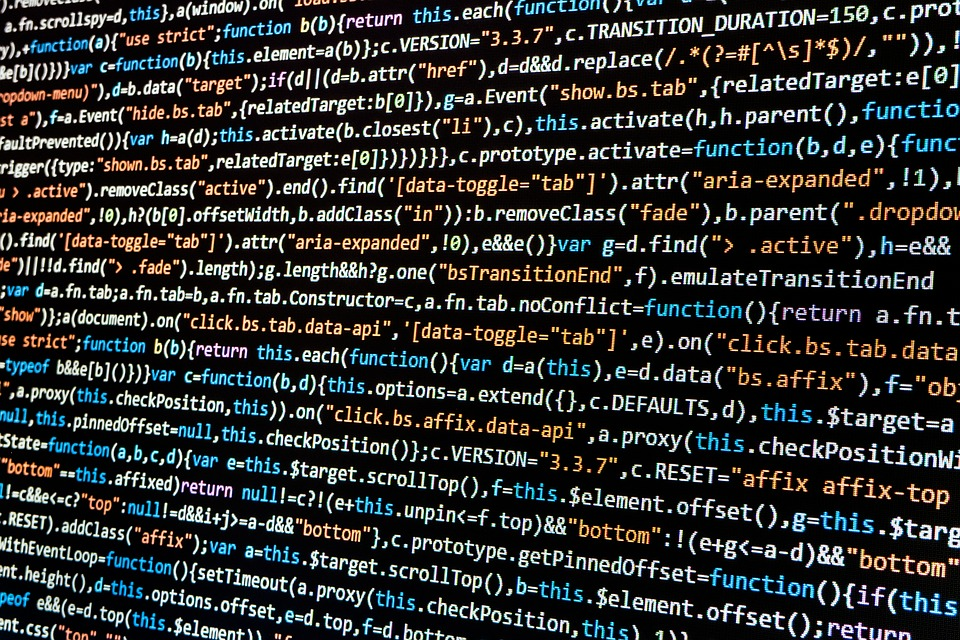
You do not need to learn all these languages at the same time. Each language has its own features, and learning one language first can help you understand the basic concepts that also appear in other languages. For this course, we will begin with Python because its syntax is relatively readable and makes it easier for beginners to focus on learning programming concepts.
4.What Is Python?
Python is a general-purpose programming language that allows people to write instructions for computers. It was designed with an emphasis on readable code, which means that many Python instructions look relatively simple compared with those in some other programming languages. This makes Python a popular starting point for people who are learning programming for the first time.
Python can be used for many different purposes. Programmers use it to create small programs, perform calculations, process information, automate repetitive tasks, and develop larger software projects. It is also used in areas such as web development, scientific research, data analysis, and artificial intelligence. You do not need to understand these fields in detail right now. For now, the important thing is to understand that Python is a tool we can use to write instructions and solve problems with a computer.
One reason Python is suitable for beginners is that we can write useful instructions without needing to understand every detail of how a computer works internally. We can start with simple commands, learn what they do, and gradually combine them to create more complex programs.
Let's look at our first example:
print("Hello, World!")
This is a small Python program.
The word print is the name of a built-in function that we can use to display information.
The parentheses () contain the information we want to display, and the quotation marks indicate that Hello, World! is text.
When Python runs this instruction, the output is:
OutputHello, World!
The computer displays the message because we instructed it to do so. The program does not need to be long or complicated to count as programming. Even a single line of code can be a complete program if it performs the task we want.
Now consider another example:
print("Hello!")
print("I am learning Python.")
print("This is my first program.")OutputHello!
I am learning Python.
This is my first program.
Python processes these instructions in order, from the first line to the last. As a result, the computer displays three messages on separate lines. This example introduces an important idea: the order of instructions can affect what a program does.
Do not worry if the code looks unfamiliar at first. You are not expected to memorize everything immediately. Focus on understanding what each line tells the computer to do. With practice, you will become more comfortable reading and writing Python code.
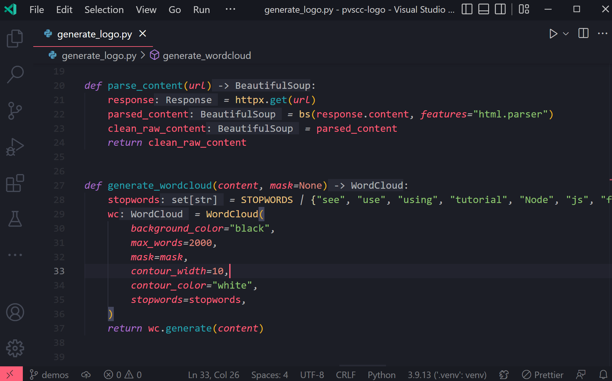

5.What Can We Create with Programming?
Programming is useful because it allows people to create digital products and solve problems in different areas of life. Many things we use every day, such as websites, mobile applications, computer games, and online learning platforms, rely on programs written by developers. Programmers decide how these systems should behave and write instructions that allow them to perform their intended tasks.
Websites and Applications
Programmers use code to build websites and applications that help people communicate, learn, shop, share information, and complete their work. For example, an educational website might allow students to read lessons, answer quizzes, and check their results. Programming makes it possible for the website to respond to user actions and perform tasks rather than simply displaying a fixed page.
Different programming languages and technologies can be used to create different parts of a website or application. You do not need to learn all of them now. At this stage, simply remember that programming helps developers create the instructions that make digital products work.
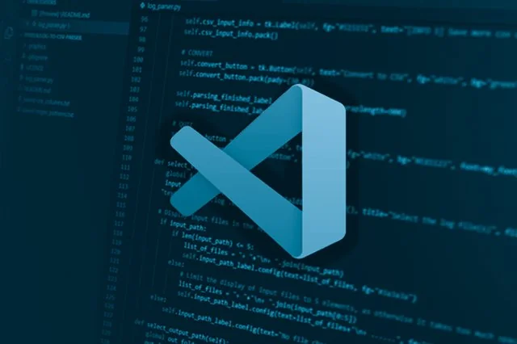
Computer Games
Programming is also used to create computer and mobile games. A game needs instructions to control how characters move, how players earn points, how obstacles behave, and what happens when a player wins or loses. Programmers write code that connects these actions and makes the game respond to the player's decisions.
For example, when you press a key to move a character, the game follows instructions that determine how the character should move. When you collect an item and receive points, the program updates the score and displays the new result. These actions happen because the developers have written rules and instructions for the game.
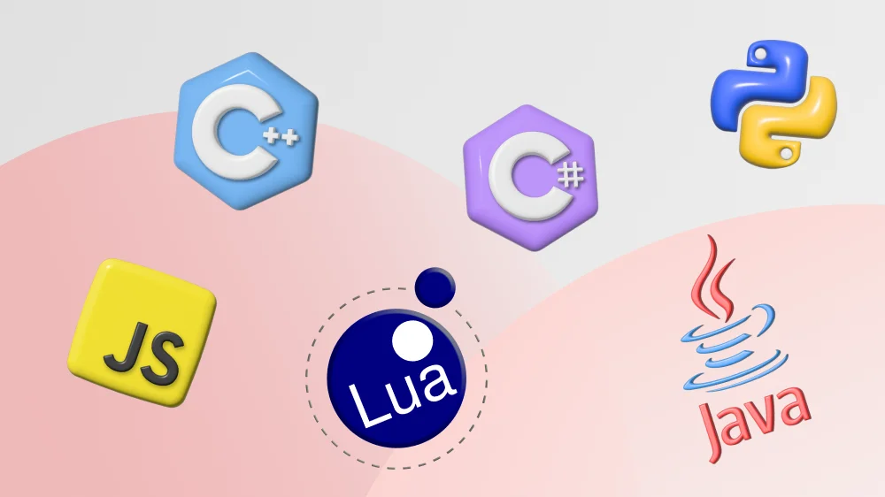
Working with Information
Computers can store and process large amounts of information, but programming helps people organize that information and use it effectively. A program might calculate students' average scores, sort a list of names, count the number of books in a library, or identify patterns in a collection of data.
Imagine that a teacher has the scores of 100 students and wants to calculate the class average. Instead of calculating every result manually, the teacher could use a program to perform the calculation. Programming can save time, reduce repetitive work, and make it easier to process information.
Automation
Automation means using technology to perform tasks with less repeated human effort. Programmers can write programs that handle repetitive activities, such as organizing files, performing calculations, or processing information in a spreadsheet.
For example, imagine that someone needs to rename hundreds of files one by one. A program could follow a set of instructions to rename those files automatically. The programmer must first decide the rules and write the instructions, but the computer can then perform the repeated task much faster than doing each file manually.
These are only a few examples of what programming can do. You do not need to decide which area you want to specialize in yet. First, focus on understanding the basic concepts and developing your problem-solving skills. As your knowledge grows, you will be able to explore different areas and choose projects that interest you.
6.Why Should You Learn Python?
Learning Python is not only about learning how to write code. It is also an opportunity to develop logical thinking, patience, creativity, and problem-solving skills. When you write a program, you need to understand the problem, decide what steps are necessary, write instructions, and check whether the result is correct. These skills can be useful in programming and in many other areas of your education and daily life.
Python is a good starting point because its readable syntax allows beginners to focus on the logic behind a program instead of struggling with too many complicated rules at once. You can begin with simple commands and gradually learn more advanced concepts, such as variables, conditions, loops, and functions. Each new concept builds on ideas you have already learned.
However, learning programming still requires practice. Your first program might not work as expected, and you may sometimes receive an error message that you do not understand. This is a normal part of learning. Instead of becoming discouraged, read the message carefully, check your code, and try to identify what went wrong. Every mistake you investigate can teach you something new.
You also do not need to understand everything immediately. Some concepts will become clearer only after you have used them several times in different examples. The best approach is to learn one concept at a time, practice it, ask questions when something is unclear, and gradually build your knowledge.
By the end of this course, the goal is not simply to memorize Python commands. The goal is to understand how to use programming to express ideas, solve problems, and create something useful. Start with the basics, stay curious, and remember that every experienced programmer once had to write their first line of code.
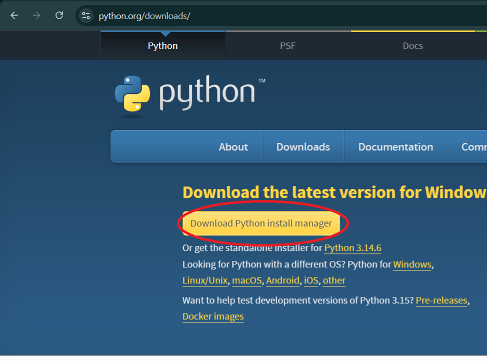
Extra Reading: Common Uses of Python in the Industry
Python is a general-purpose programming language known for its simplicity and ease of use. These qualities have made Python one of the most popular programming languages today. It is used in many fields, such as data science and machine learning, web development, scripting and automation, embedded systems, IoT, and much more.
-
Data Science and AI
Python is the main language that most data scientists and machine learning engineers currently use. Libraries like Pandas and NumPy make data analysis less tedious, while others like TensorFlow and scikit-learn make machine learning and working with AI models much more accessible.
-
Web Development
Python frameworks like Django, FastAPI, and Flask let developers build scalable and secure back-end systems with minimal effort. (A website has two sides: the front end is the design you can see with your eyes, and the back end stores the data and does the work behind the scenes.) Many social media platforms like Instagram and Pinterest use Python on the back end.
-
Cybersecurity
Cybersecurity professionals and ethical hackers use Python to detect threats like malware (harmful software built to steal from or damage your computer), build automated security scans, and analyze threats.

-
Embedded Systems and IoT
An embedded system is a dedicated micro-computer inside a machine doing one specific job. IoT (Internet of Things) is a network of physical devices, vehicles, and appliances that are connected to the internet and talk to each other. Python runs well on microcomputers like Raspberry Pi and MicroPython-compatible boards, so you can build IoT projects like smart home devices and weather monitoring stations.
-
Testing, DevOps and System Administration
In software testing, Python tools such as pytest are used to create reliable test suites, while system administrators rely on Python for server monitoring, log management, and system-level tasks. Python is also widely used in DevOps for writing CI/CD scripts and managing infrastructure.
-
Automation
One of Python's biggest strengths is automation. You can write simple scripts to help with repetitive tasks like extracting data from spreadsheets, sending emails, and working with files on your computer. Libraries like Selenium and BeautifulSoup also make it easy to interact with websites, so you can collect public data and automate tasks in a web page.
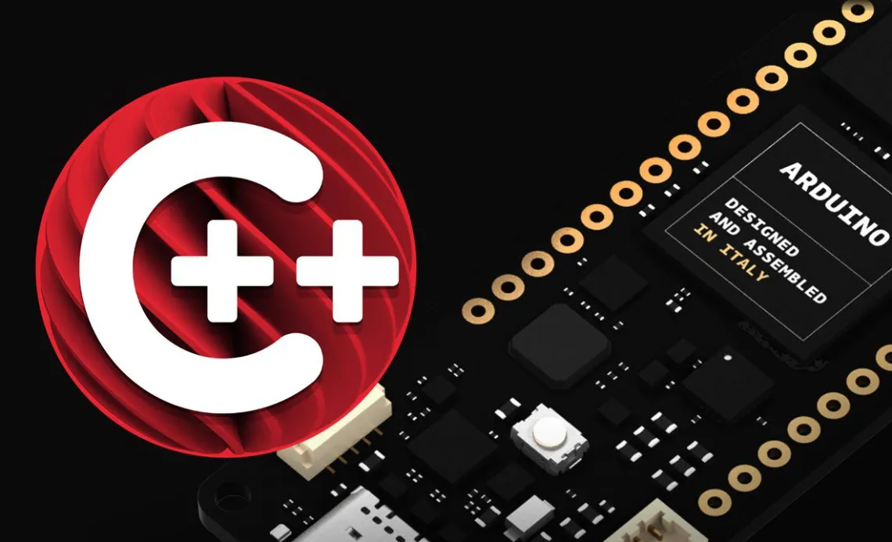
Final Reminder
Programming begins with a simple idea: giving a computer instructions to complete a task. A programming language provides a way to write those instructions, and Python is the language we will use to begin our journey.
You do not need previous experience to get started. All you need is a willingness to learn, practice, ask questions, and keep improving.
Ready to check what you have learned?
Take a QuizPython Basics
Introduction to Python together! But, Solo-Leveling is better, and Consistency is a key in here အယ့်လယ့်!